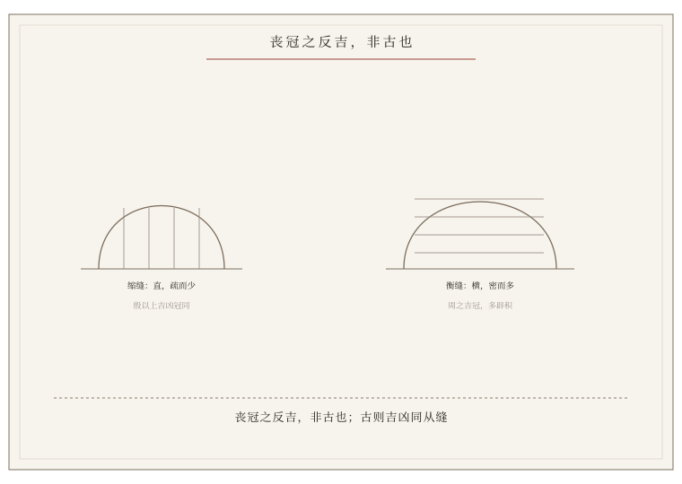

檀弓上 · 三·三十四 · 第 237 课
古者冠缩缝，今也衡缝，故丧冠之反吉，非古也。注「缩，从也」「衡读为横」「解时人之惑」。
说什么事：一条冠上的缝，直与横之间，藏着一个时代的辨正。
落在哪一层：礼，兼及礼制与礼意。论「非古也」三字。
为何编在此位：上节论位之序，此节论冠之缝。一为哭之形，一为服之形。
【经】古者冠縮縫，今也衡縫，故喪冠之反吉，非古也。
【注】縮，從也。今禮制，衡讀為橫，今冠橫縫，以其辟積多。解時人之惑，喪冠縮縫，古冠耳。
【疏】此一节论记者解时人之惑也。古者，自殷以上也。缩，直也。殷以上质，吉凶冠皆直缝；直缝者，辟积摄少，故一一前后直缝之。「今也衡缝」者，今，周也；衡，横也；周世文，冠多辟积，下复一一直缝，但多作摄而并横缝之。「故丧冠之反吉，非古也」者，周吉冠文，故多积俵而横缝也；若丧冠质，犹疏辟而直缝，是丧冠与吉冠相反，故云「丧冠之反吉」也。而时人因谓古时亦丧冠与吉冠反，故记者释云「非古也」，正是周世如此耳，古则吉凶冠同从缝。
缩缝 注「缩，从也」。缝线直下。
衡缝 注「衡读为横」。缝线横向。
辟积 褶裥。注「以其辟积多」。
反吉 与吉冠相反。
非古也 不是古制。注「解时人之惑」。
古时冠是直缝，如今是横缝；所以丧冠与吉冠相反，并不是古制。
此节一句辨正。周人吉冠文，多褶裥而横缝；丧冠质，少褶裥而直缝。于是丧冠看上去与吉冠相反。时人便以为古来如此。记者断一句「非古也」：古时吉凶冠同是直缝，这个「反」是周代才有的事。
第一层 一缝之辨 冠上一条缝，直与横，看似微末。而它牵连着一整套文质之别：殷以上质，吉凶冠皆直缝；周世文，吉冠多辟积而横缝。此层可见礼制之变，常从最细的工艺上起。
第二层 丧冠之所以反吉 周之吉冠文而横，丧冠质而直，故两者相反。疏「周吉冠文，故多积俵而横缝也；若丧冠质，犹疏辟而直缝」。此中有一层理：丧冠之所以「反」，不是有意标异，是它守着旧的质，而吉冠已经变文。
第三层 「非古也」三字 此三字是记者为时人解蔽。时人见丧冠与吉冠相反，便推想古亦如此；记者说：古时吉凶同缝，此反正是周世之变。此层最见古人的史识：不以今例古，且肯为一个「古」字作辨。
第四层 记者的口气 此节无「盖」、无「或曰」，是直断。与上节「或曰」之疑恰成对照：可断者断，可疑者疑。此种分寸，是《礼记》全书的笔法。
与今日何干 凡见一种「古今相反」的做法，人多以为自古如此。此节给一把尺：相反往往不是古意，是某一代的变法之后，旧物成了「反」。要辨这一点，须查其始。
| 左 | 右 |
|---|---|
| 古者冠缩缝 | 自殷以上，吉凶冠皆直缝 |
| 缩，从也 | 缝线直下 |
| 今也衡缝 | 周世文，冠多辟积而横缝 |
| 衡读为横 | 非衡平之衡 |
| 故丧冠之反吉 | 丧冠质直，吉冠文横 |
| 非古也 | 时人以为古亦相反，记者辨之 |
| 古则吉凶冠同从缝 | 同者缝法 |
画两顶冠并置，左右各一，视点平而略近，冠的正面朝向观者。左冠：帽体上可见若干道竖直的缝线，缝线疏而少，帽形简朴。右冠：帽体上可见若干道横向的缝线，缝线密而多，帽形饱满。两冠之下各放一条素带（缨），左带素净，右带稍宽。两冠之间以一段空白相隔，下方地面同一。不写文字。赭色只用在左冠缝线的一处交点与右冠的一条横缝上。
